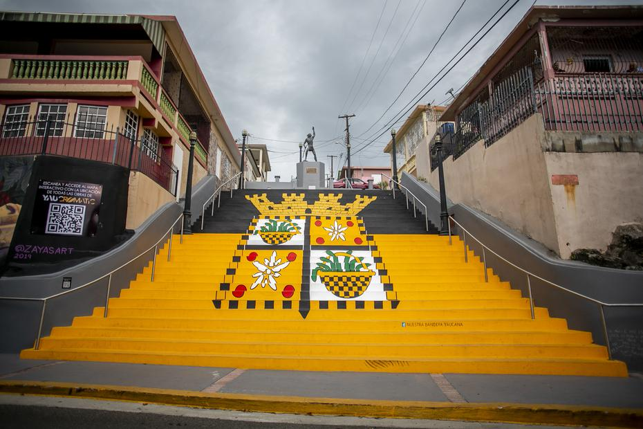

La Escalinata
Esta escalera (escalinatas) está en el pueblo de Yauco, en la parte sur de Puerto Rico. Representa el escudo o escudo de armas de la localidad.
Yaucromatic
Celebrando la cultura y las artes se concibe el proyecto de arte urbano y pintura muralista en la Ciudad del Café, Yaucromatic. Como protagonistas se ha contado con casi una veintena de muralistas del patio e internacionales y a través de diversas alianzas y el auspicio del sector público y privado es que se ha logrado organizar un evento sin par de hermosa manifestación artística en el pueblo de Yauco y para el disfrute de todos.
Pueden visitar en:
Cerro El Rodadero
Cerro el Rodadero se encuentra en lo alto de las montañas de Yauco, un pueblo en la parte suroeste de la isla. Este pico es un afloramiento rocoso, en lo alto (alrededor de 850 pies) en las montañas verdes. Desde esa altura se puede ver toda la costa y muchos pueblos de los alrededores.
Pueden visitar en:
Charco Piazza
Esta pequeña cascada, río y piscina natural están justo cuando empiezas la ruta del Cerro el Rodadero. Puedes bajar al río a través de un camino en el lado izquierdo del puente, o por un pequeño camino a la derecha (¡realmente depende de cuándo quieras mojarte!). Llegar a la piscina natural requiere meterse en el agua. Es un buen lugar para pasar un rato y refrescarse.
Pueden visitar en: